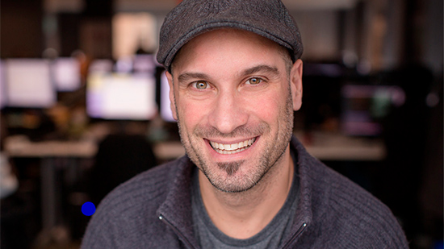
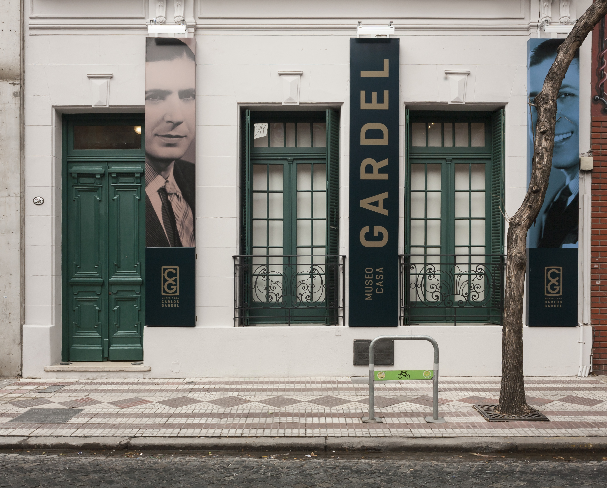

Pablo Toscano, director técnico de animación de uno de los juegos más importantes de la década pasada
Pablo Toscano se fue de Argentina en 2003 hacia Quebec, donde comenzó a trabajar en la compañía Frima Studios. Posteriormente, se unió al grupo de trabajo de Ubisoft Quebec, donde desarrolló uno de los juegos más importantes del 2018, el Assassin’s Creed Odyssey.

La casa del tango
Un recorrido por la casa de uno de los máximos exponentes del tango, Carlos Gardel, tras su reapertura.

Arsénico en el agua, una problemática común en muchas ciudades argentinas
El agua es vital para el cuerpo humano pero, desde hace muchos años, en varias ciudades como Carlos Casares y Pehuajó, entre otras, sale totalmente contaminada por arsénico, un elemento químico altamente tóxico.